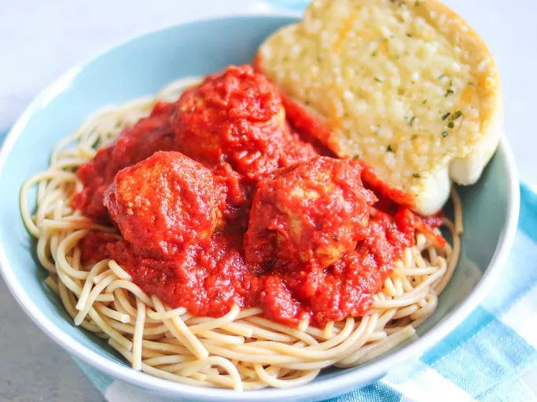

Chicken Meatballs and Spaghetti

Ingredients
Sauce:
- 3 (6 ounce) cans tomato paste
- 2 1/4 cups water
- 1 (16 ounce) can crushed tomatoes
- 1 (8 ounce) can diced tomatoes
- 1 tablespoon dried basil
- Salt and ground black pepper to taste
Meaballs:
- 2 pounds ground chicken
- 1 cup dry bread crumbs
- 1/2 cup grated Parmesan cheese
- 2 eggs, lightly beaten
- 2 tablespoons italian seasoning
- salt and ground black pepper to taste
- cooking spray
- 1 (16 ounce) package whole wheat spaghetti
Steps
- Combine tomato paste, water, crush tomatoes, diced tomatoes, and basil in a
large saucepan over medium heat;season with salt and black pepper. Bring to
a boil, reduce heat to low, and simmer while preparing meatballs, 15 minutes.
- Combine ground chicken, bread crumbs, Parmesan cheese, eggs, Italian seasoning,
salt, and black pepper in a medium bowl; form into 1-inch balls.
- Heat a large skillet over medium heat; coat with cooking spray. Add meatballs;
brown on all sides. Transfer meatballs to simmering tomate sauce; cook until an
instant-read thermometer inserted into meatball centers reads 160 degrees F (70 degrees C),
about 30 minutes.
- Bring a large pot of lightly salted water to a boil. Cook spaghetti in the boiling water,
stirring occasionally, until tender yet firm to the bite. about 12 minutes. Drain. Serve
meatballs and sauce over spaghetti.